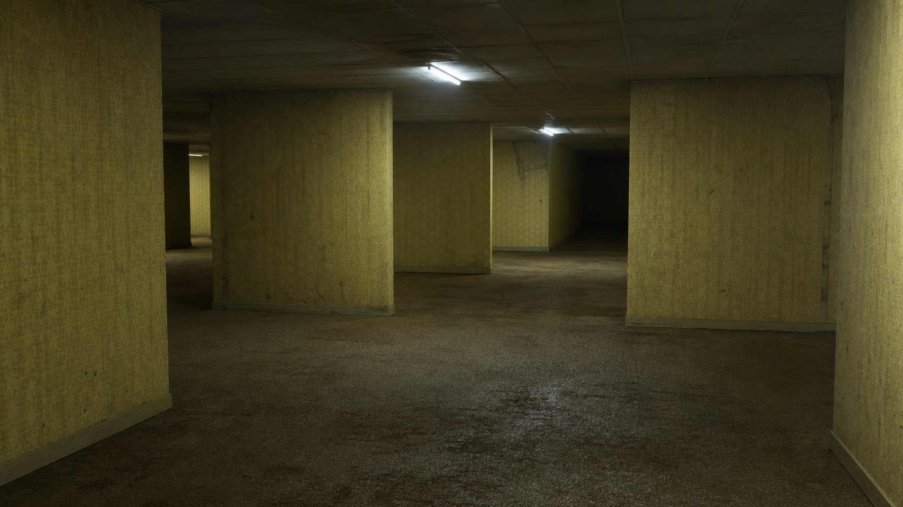

01эксперт → медиа
Канал с нуля
Позиционирование, оформление и контент-система, из которой не хочется выходить.
↗
Telegram-каналы и запуски / Бутов × Федонко
Строим каналы, вокруг которых растут аудитория, доверие и продажи.
ЭТАЖ 02 / ВЫБЕРИТЕ МАРШРУТ
Позиционирование, оформление и контент-система, из которой не хочется выходить.
↗Разбираем старый этаж, меняем маршрут и возвращаем каналу внимание аудитории.
↗Прогрев, предложение и продажи через Telegram без внезапной рекламной атаки.
↗Берём канал, редакцию, аналитику, команду и запуски под единое управление.
↗Все маршруты ведут в одну систему. Отличается только точка входа.
ЭТАЖ 03 / МАРШРУТ ПРОЕКТА
Можно зайти с одной задачей или пройти маршрут целиком. На каждом участке понятно, что происходит и куда мы идём.
Автор, аудитория, позиционирование и точка назначения
Голос канала, рубрики, тексты и визуальная система
Посевы, коллаборации, аналитика и новая аудитория
Прогрев, оффер, воронка, продажи и следующий цикл
ЭТАЖ 04 / ПРАКТИКА КОМАНДЫ
Первые проекты агентства оформляем в публичные кейсы. Пока показываем то, за что отвечаем лично, и рабочие материалы — на созвоне.
Позиционирование автора, архитектура канала, рубрики, редакционный ритм и тексты, которые не звучат как корпоративный блог.
Продукт, команда, прогрев, воронка и управление запуском — от первой гипотезы до разбора результатов.
Как только появляется подтверждённый результат — добавляем сюда цифры. Не раньше.
ЭТАЖ 05 / ПЕРВЫЕ 30 ДНЕЙ
Аудит, аудитория, роль автора, обещание канала и понятная причина подписаться.
Голос, рубрики, контент-план и первые 12–16 материалов для стабильного выхода.
План продвижения, список площадок, первые тесты и метрики, по которым принимаем решения.
Карта продукта, оффер, прогрев и календарь запуска — если проект готов к продажам.
Точный состав первого месяца фиксируем после диагностики: он зависит от состояния канала и продукта.
ЭТАЖ 06 / ФОРМАТЫ И СТОИМОСТЬ
Начинаем с задачи, а не с пакета услуг. Ниже — ориентиры, чтобы понимать порядок работы и бюджета до первого сообщения.
Диагностика, позиционирование, структура канала, рубрики и план запуска редакции.
Стратегия, редакция, контент, рост, аналитика и управление процессом.
Продукт, оффер, прогрев, воронка, продажи и разбор результатов.
ЭТАЖ 07 / СВЯЗЬ